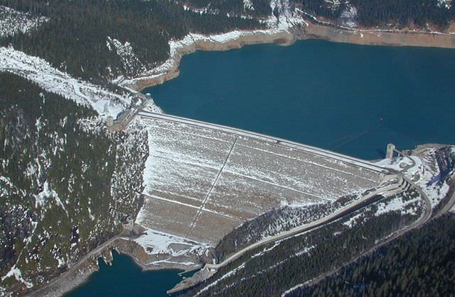
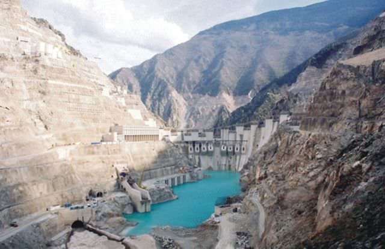
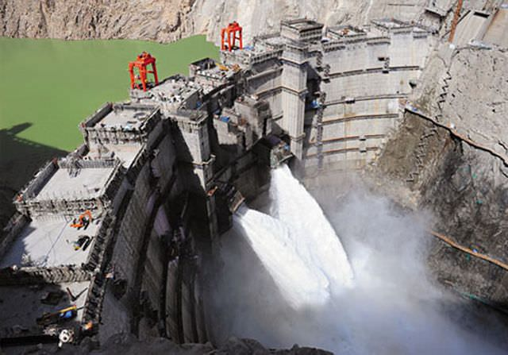
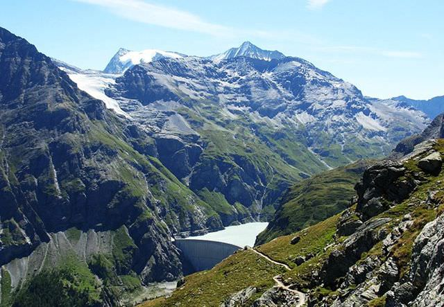
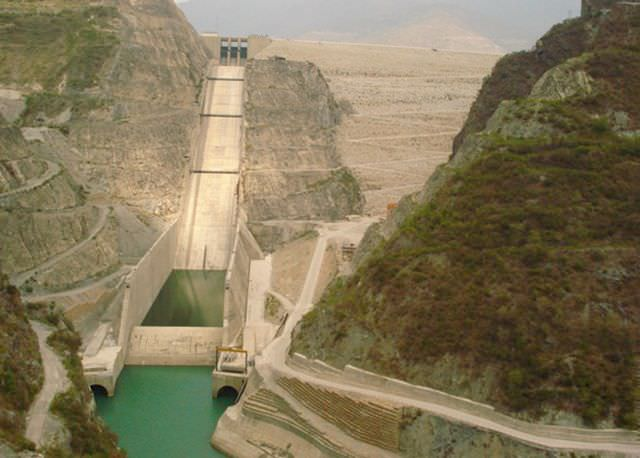
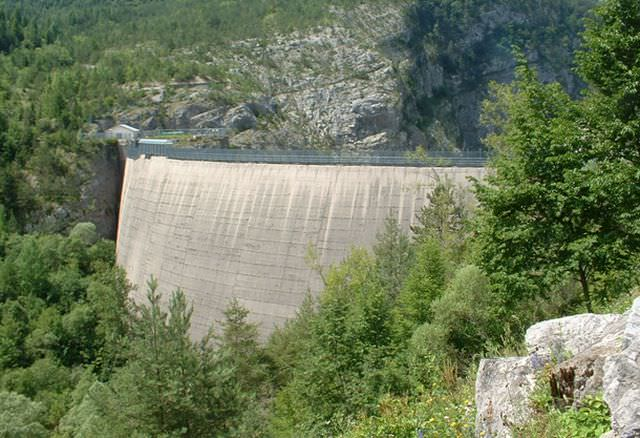
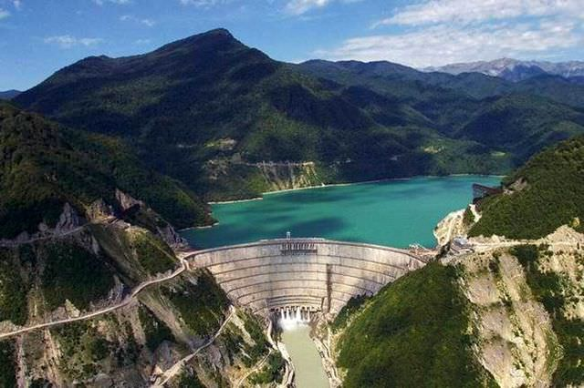
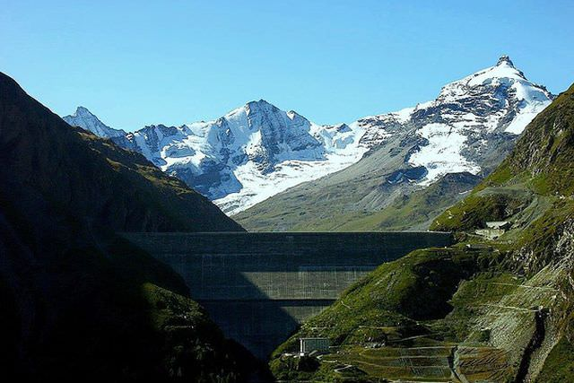
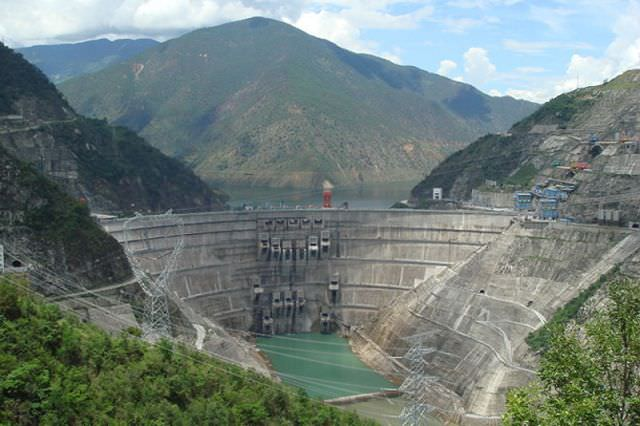
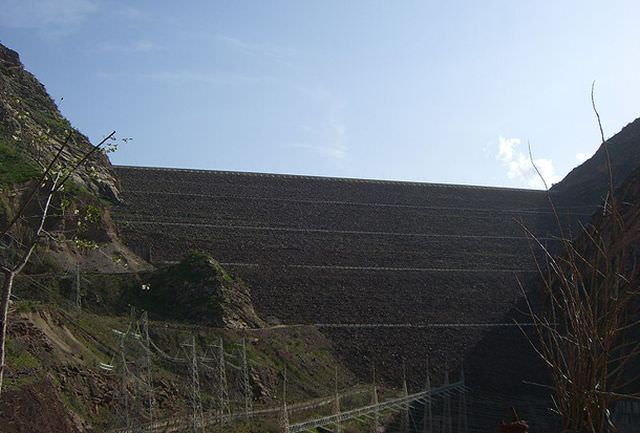

Top 10 cele mai inalte baraje din lume.
10. Barajul Mica, Canada – 243 m

9. Barajul Deriner, Turcia – 249 m

8. Barajul Laxiwa, China – 250 m

7. Barajul Mauvoisin, Elvetia – 250 m

6. Barajul Tehri, India – 261 m

5. Barajul Vajont, Italia – 262 m

4. Barajul Inguri, Georgia – 271 m

3. Barajul Grande Dixence, Elvetia – 285 m

2. Barajul Xiaowan, China – 292 m

1. Barajul Nurek, Tajikistan – 300 m
